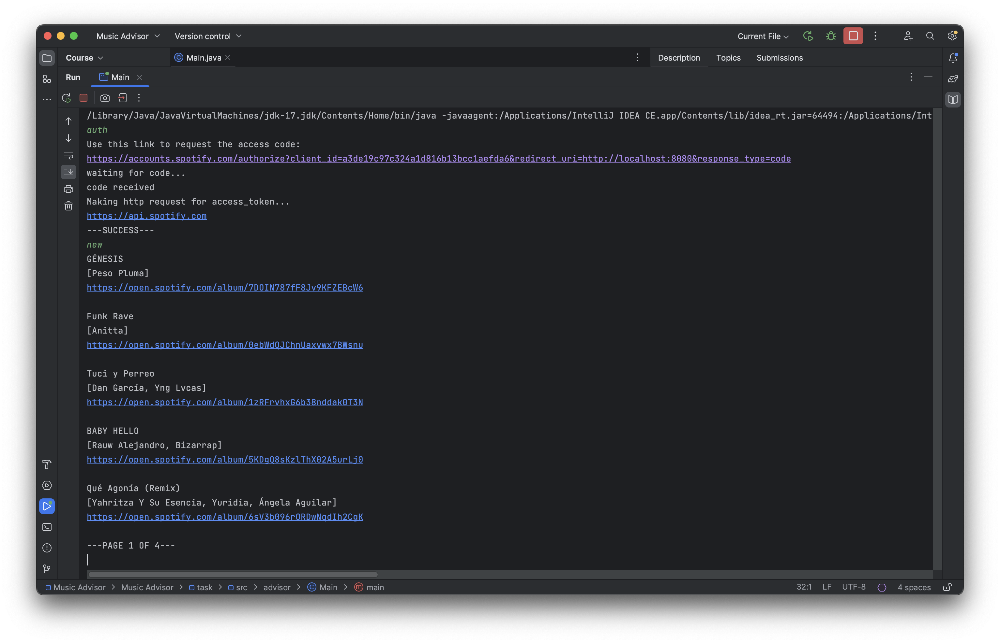
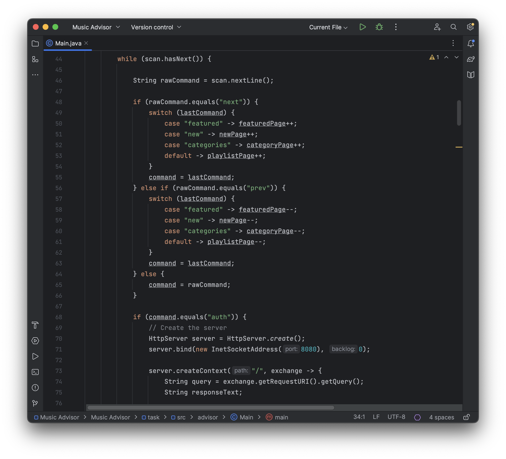

Technical Log: Music Advisor
Music recommendation app using Spotify API

Overview
The goal of the project is to build a music recommendation app that we will control from the command line. The app will interact with the Spotify API and will be capable of retrieving songs, albums and playlists in a handful of different categories.
Context
For those with access to Hyperskill the project page can be found by following this link.
The project is divided into five stages that we must complete in order:
- In the first stage we create a mockup of the functioning of our website.
- In the second stage we connect to the Spotify API and authenticate ourselves so we can use it.
- In the third stage we create a Java server so we can receive responses from Spotify.
- In the fourth stage we parse and display the responses from Spotify.
- Finally, we add pagination to our app and rewrite it in the Model-View-Controller architecture.
The app receives commands from the IDE terminal and displays the results of our query accordingly, however each time we run the app we must authenticate ourselves using the “auth” command. Besides the authentication command we have “new”, which shows the latest album releases; “featured”, which returns Spotify's featured page, “categories” which returns all category IDs that we can use to search for playlists and finally “playlists (category id)” which returns the playlists matching the category ID that is given.
Late into the project we also add “next” to move to the next page in the same result, “prev” to move back through pages and “exit” which terminates the application.
Solution
Because we were still trying to understand the basics of Java the project structure was kept to a single file. The logic is located inside a while loop that iterates through the code when we give it a new command. Inside the while loop there is a big if-else statement that checks the text in the command given against reference values.
For example, if command.equals(“new”) {...} we proceed to create a new server, send the get request and receive it. From then we have another if-else statement, if the request was successful (code 200) we proceed to parse it and show it to the user, otherwise we display an error.
Another possible point where an error can happen is when the request itself is composed, if the auth key we send along with it is not valid we will run into an exception, we use a try-catch block to deal with this scenario.
All of this is done procedurally, so we repeat many lines of code since the requests are similar for all of the main commands.
Alternative Solutions
A better alternative to writing the code procedurally would have been to create a “HttpSender.java” object so that we could reuse the code that is pretty much identical for all commands. The Hyperskill solution's page provides some examples of how the project can be further broken down into parts to make it easier to understand or to fit the Model-View-Controller architecture.
Uploaded on June 26, 2023